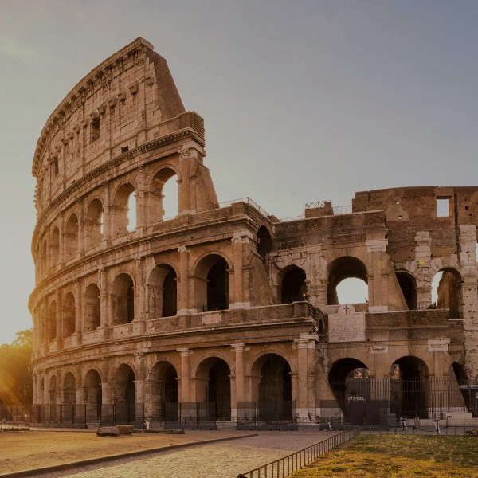
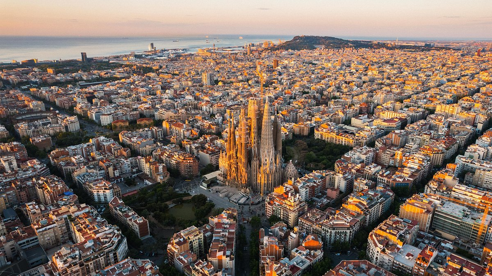
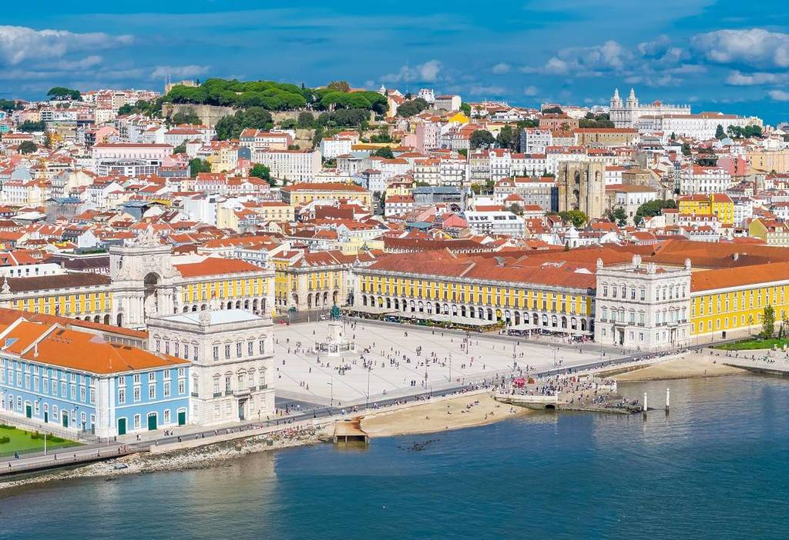
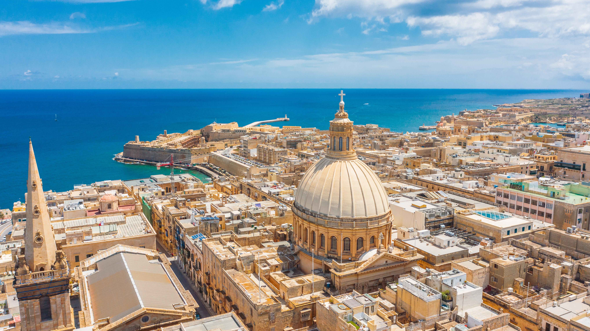

Jižní Evropa
Jižní Evropa se rozprostírá podél Středozemního moře a zahrnuje země jako Itálie, Španělsko, Portugalsko, Řecko a Malta. Region je proslulý slunečným klimatem, nádhernými plážemi, historickými městy a bohatou kulturou. Najdete zde malebné vesnice, rušné metropole, antické památky, umělecká díla a kulinářské speciality. Jižní Evropa je ideální pro turisty, kteří hledají kombinaci historie, umění, gastronomie a přírodních krás.
Itálie
Hlavní město: Řím. Itálie je země historie, umění a gastronomie. Řím nabízí Koloseum, Forum Romanum, Pantheon a Vatikán. Florencie je centrem renesance, Benátky proslulé kanály a Gondoly. Itálie láká turisty také na Sicílii a Amalfi pobřeží, vinice a tradiční kuchyni.
Španělsko
Hlavní město: Madrid. Španělsko je známé svou kulturou, flamencem, tapas a historickými městy. Barcelona nabízí Gaudího architekturu a Sagrada Familia, Sevilla tradiční andaluskou atmosféru a Granadu s palácem Alhambra. Španělsko má nádherné pláže Costa del Sol a Baleárské ostrovy.
Portugalsko
Hlavní město: Lisabon. Portugalsko je země pobřeží, vína a historických měst. Lisabon nabízí staré čtvrti Alfama a Bairro Alto, přístavní město Porto proslulé vínem a Douro údolím. Algarve je známé krásnými plážemi a skalními útvary.
Řecko
Hlavní město: Atény. Řecko je kolébkou antické civilizace a krásných ostrovů. Atény nabízí Akropoli a Parthenon. Santorini a Mykonos lákají turisty modrobílou architekturou, plážemi a romantickými západy slunce. Řecko je také známé gastronomií, olivami a tradičními tavernami.

Malta
Hlavní město: Valletta. Malta je malý ostrovní stát s bohatou historií, středověkými městy a křišťálově čistým mořem. Valletta nabízí historické paláce, kostely a pevnosti. Malta je ideální pro milovníky potápění, památek a středomořské kultury.
